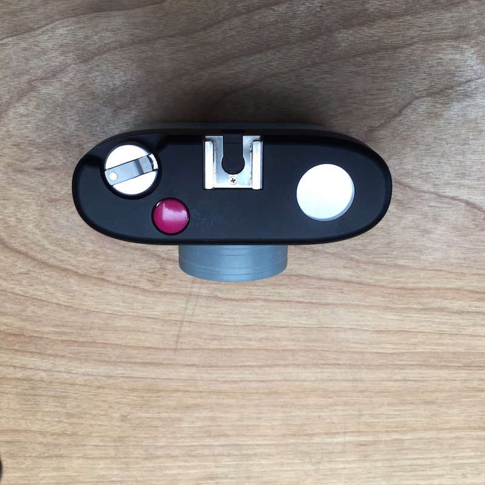
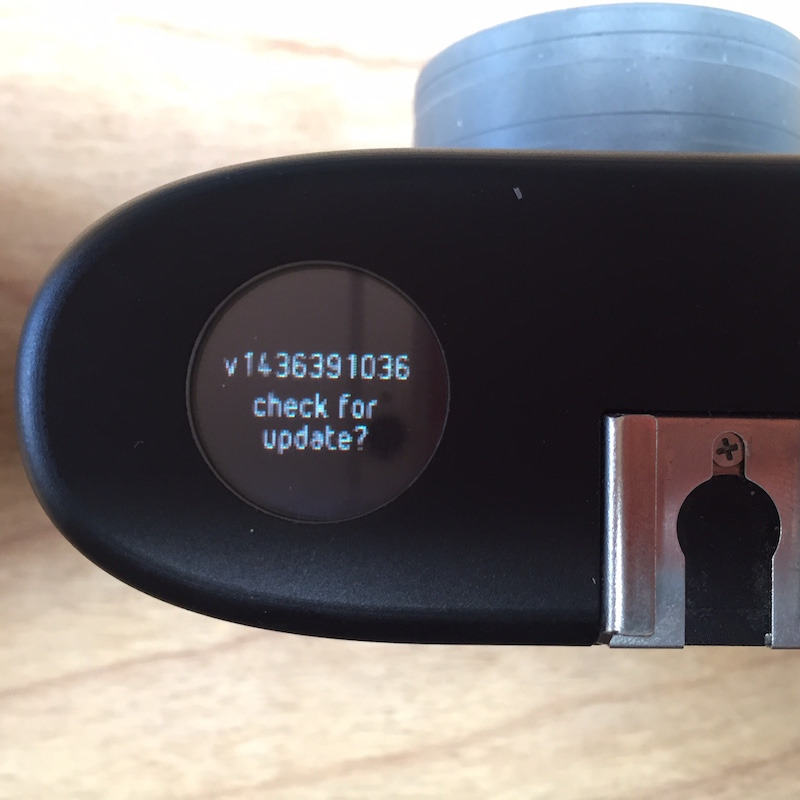
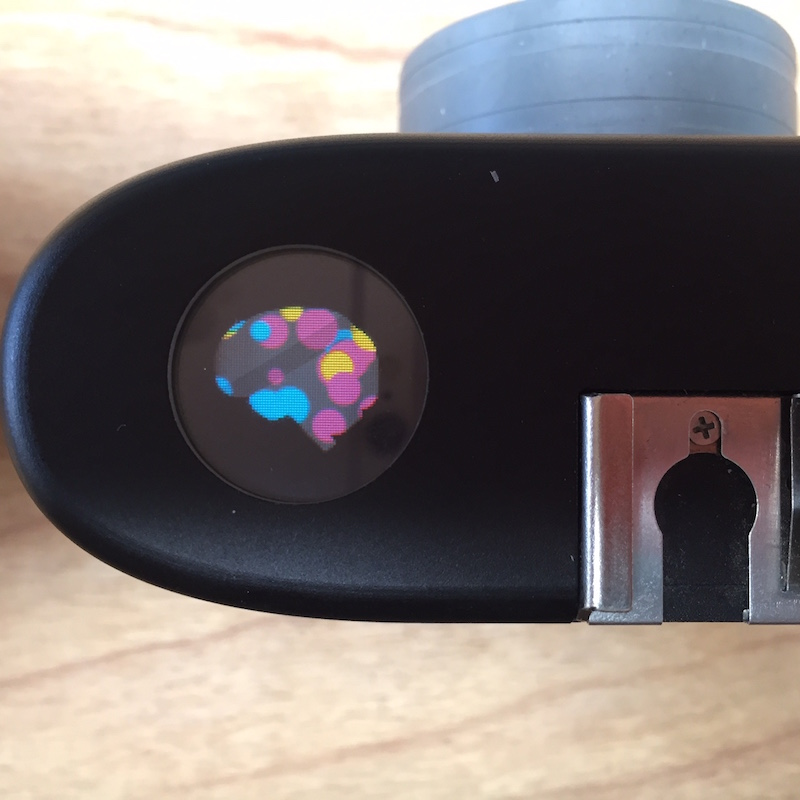
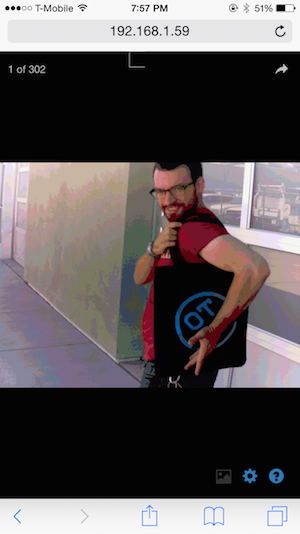
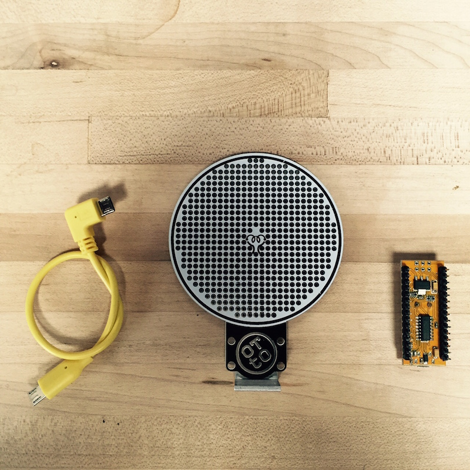
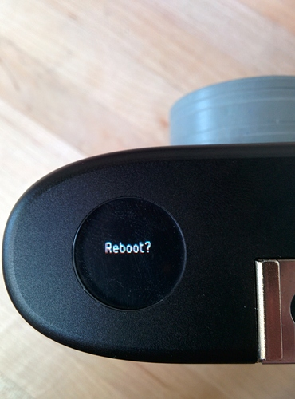

Welcome!
Get to know your OTTO GIF camera!
GETTING STARTED WITH OTTO!
Unboxing your OTTO!
Inside your fancy blue OTTO pelican case you will find
- OTTO!
- 5V 2.1A USB Wall-Wart Charger
- USB Barrel Jack Charging Cable (USB-A to 2.1mm Barrel Jack)
- 2x Hex wrenches
- 2x Neck Strap D-Ring Hangers (-20 thread, fits tripod and side holes)
OTTO Buttons, Cranks, and Ports
- Pink Shutter Button - Selects and Activates menu items. Acts as a shutter button in GIF mode.
- Crank - Navigates OTTOs menu, Rotate clockwise in GIF mode to take images for GIFs. Rotate counter-clockwise in GIF mode to compile and save your images into a GIF.
- Grey Button - Turns OTTO on. Navigates back to the OTTOs main menu.
- Power Port - Charges OTTO’s battery via the USB Charging Cable.
- microUSB Port - The Yellow OTTO Circle houses a micro USB port. Twist left to access.
Turning OTTO on!
To power OTTO on, press the grey button on the underside of OTTO. Just a quick tap works.BE PATIENT!
If you press and hold for 4 seconds, it will always cut power. There is a computer booting inside, it could take up to 10-15 seconds before it can show an image.

OTTOs Menu
Navigate OTTOs menu by rotating the crank. Press down on the crank to pop it up. Navigate back to this menu at any time by pressing the grey button on the underside of OTTO.
- GIF - OTTOs standard image making mode
- WiFi - Use this to turn on and off OTTOs WiFi. See OTTOs network and the IP address for accessing your GIFs through your phone or computer.
- Update - Get the latest and greatest OTTO software via wireless software updates. 
- Battery Status - See how muchcharge is left on OTTO.
- Memory - See the status of OTTOs internal storage.
- Sleep - Hold the pink shutter button to put OTTO to sleep. When OTTO says goodnight, OTTO is powered down.
Viewing & Downloading GIFs on OTTO
To View!
- Use the crank to navigate to WiFi on OTTOs menu. Click the Pink Shutter button to turn WiFi on.
- Join the OTTO WiFi network on your phone or computer. Navigate to the IP address OTTO provides.
- See your GIFs! Swipe Swipe right to view previous GIFs. 
- Tweet, Facebook, Pintrest or Download! Share your work!
To Download!
- Select the curved arrow in the top right.
- Select download image.
- A new window with the GIF will open. To download onto your phone, press and hold on the GIF and select download image. To download onto your computer, right click and select save image.
Making GIFs!
- Navigate to GIF using the rotary dial. Click the pink shutter button.
- Each Click of the Shutter button and/or partial rotation clockwise on the rotary dial will take a frame of the GIF. You can take up to 33 frames on OTTOs standard mode.
- When you’re finished making frames, rotate the rotary dial counter-clockwise to compile and save the GIF.
Turning OTTO Off
To power OTTO down, navigate to the Sleep option on the OTTO menu. Hold the pink shutter button until the sun goes to sleep and turns into the moon. When the screen is off, OTTO is powered down.
Hacking OTTO
All About FlashyFlash
What exactly is FlashyFlash?
FlashyFlash extends OTTO’s hackability into physical space! You can add sensors, trigger relays, or just build an LED flash bulb for your OTTO.
Be warned: FlashyFlash is a tool for you to build on and extend OTTO. It is not a ready-made solution to any one particular use. With a little effort, FlashyFlash can turn OTTO into anything from a facial recognition door lock, to a temperature-sensing time lapse camera… but only with your help.
If you’ve heard of Arduino, you know it’s a set of prototyping tools which make it easy to write “sketches” (firmware) which run on low-cost microcontroller boards. Those “sketches” define some set of interactions between the microcontroller “brain” and any attached sensors or actuators.
For example, here’s how you make an LED blink on and off over and over using Arduino.
FlashyFlash itself is just a good ‘ol prototyping PCB with a couple neat tricks up its sleeve:

Those blue lines are hefty traces that make it easy to plug a DCCDuino or Arduino Nano into the staggered holes with a nice friction fit, and still have an easy way to wire up to each pin, plus add a pull up or pull down resistor as needed! The vertical traces are not connected by default, but can be turned into Ground and Vcc rails with a single solder blob or wire jumper. Easy!
Also, the little “filament” trace in the center of FlashyFlash is spaced such that you can attach any SMT LED from 0201 on up across its center, and then easily wire to it via the small through-holes on either side. There’s nothing to say you can’t use the same multi-function pads to attach an SMT microphone or sensor. Go nuts! :)
How FlashyFlash Works…
FlashyFlash is powered by an ATMega328P-based Arduino compatible microcontroller board called DCCDuino Nano. That board talks to OTTO via the front micro USB port, using the pleasantly yellow microUSB cable we provide with your Flashy Flash.
Out of the box, the DCCDuino is pre-loaded with a simple blink script that makes the status LED turn on and off every second like in the tutorial linked above. If you plug everything in, and the LED on the DCCDuino is blinking at you, everything is working correctly.
Using Arduino flashing tools, you can program new sketches that let FlashyFlash be a trigger or output for OTTO in concert with a custom mode. Because OTTO is really a tiny Linux computer wrapped up to look like a camera, you would integrate FlashyFlash into an OTTO mode the same way you would use an Arduino attached to a computer in order to add extra buttons or sensors.
There are tons of different tools to make that integration sing, but we recommend pyFirmata as a great starting point.
To learn more about how to develop sketches for Arduino, check out all the Arduino Tutorials.
Assembling FlashyFlash
What exactly is FlashyFlash? Find out here.
Otherwise, let’s get this bad boy put together!
Step 1 - The Parts
- FlashyFlash Board with Hot Shoe Mount
- DCCDuino
- Micro USB to Micro USB Cable

Step 2 - Attach DCCDuino
If you look closely at the FlashyFlash board, you’ll see that there is a row that has it’s holes staggered: the two outermost rows starting at the bottom of the FlashyFlash.

As long as you orient your DCCDuino the same way as the DCCDuino-shaped white outline on the Flashy Flash PCB, there’s no wrong way to attach it. However, if it’s attached using the staggered holes, your DCCDuino will have a much stronger hold, and you won’t require soldering down for a secure fit.
We recommend attaching the DCCDuino on the back of the FlashyFlash, via the staggered holes, sitting in the lower most part of the FlashyFlash board, oriented so the micro USB port points up.
That’s a lot of words. Let’s see if this picture helps.
ACHTUNG!
Mounting your DCCDuino sideways WILL KILL IT.
Flashy Flash has breadboard-style traces (the blue lines on the image below) to make it easier to wire up circuits to your DCCDuino.
Mounting DCCDuino sideways means those traces will cause short circuits that can (and likely will) destroy that microcontroller on DCCDuino.
Step 3 - Plug in the Micro USB Cable
Slip FlashyFlash into OTTO’s Hot Shoe and plug in the micro USB cable. Again, no wrong way, but we recommend using the 90-degree angle connector on the FlashyFlash side.
Twist the Yellow OTTO cap to the left to reveal OTTO’s micro USB port. Plug FlashyFlash in!
Step 4 - Assembled. Add sensors. Get hacking.
There ya go. FlashyFlash is assembled and ready for sensors. Hack away! GIF away!
Using OTTO
OTTO Tips, Tricks & Samples!
OTTO and I have spent a lot of time together. Here are some of the tips and tricks from what I’ve learned!
Tell a simple story! 33 frames isn’t a lot, but it’s enough time to tell a simple story. Like someone getting lost. If you want your GIF to hold on a certain image, click the shutter 5 times or so for the GIF to register a hold on an image for a moment.

Experiment with movement! I love the “Crash Zoom” effect. Move over a long distance and slow your shutter rate while moving. Often even just two or three frames will give you a really dynamic movement.
Quick small moves back and forth are fun too!
Give yourself a lot of shutter clicks in a movement to create a smooth GIF.
OTTO GIFs automatically loop. Try and create something that loops seamlessly from the end into the beginning.
Play with silhouette and high contrast. OTTO has a limited dynamic range, kinda like reversal film. When you have strong blacks and a cool area of light, the colors really pop.
Don’t be afraid to set OTTO down on a surface or use a tripod.
When OTTO starts a GIF, it sets both exposure and color space for the duration of the GIF. By setting the “white balance” in an interesting color space on the first frame, you get a fun color effect throughout the GIF.
You can make some sweet time lapses.

Or do some magic tricks with clever trickery! Use stop motion to make people fly!
Find a muse! It’s more fun when someone is down to be silly!
Part of the fun of OTTO is experimenting! Hopefully these help get you started! Of course, not every GIF will come out perfect, but that’s how you learn, and sometimes you get happy accidents!
The viewfinder is just an approximation, not exactly what the lens captures. Try to give yourself some extra space when composing your shot.
You can also edit GIFs in Photoshop. Take out accidental shutter clicks, change the timing of each frame, or stitch multiple GIFs together.
=
So get out there and GIF OTTOgraphers! Let us see your GIFs!
Batch Retrieve & Delete OTTO GIFs Using Your Computer
To retrieve and delete your OTTO GIFs using your computer, we recommend using the program CyberDuck.
- Connect your computer to OTTOs wireless network.
- Open CyberDuck. Click Open Connection.
- Select SFTP (SSH File Transfer Protocol)
- Input OTTO’s WiFi address
- Username is root // Password is doge1234
- Click Connect. Navigate to /mnt/pictures
- Drag and drop your GIFs to a folder on your computer. Then delete if you wish!
¡VIVA OTTO!
Charging OTTO
OTTO charges via the port at the bottom with the provided Wall Wart and USB to barrel jack connector. If it is charging, you should be able to see an LED light faintly inside OTTO’s case. This means it is charging.
Updating OTTO
- Set up OTTO onto your WiFi Network.
- Navigate the menu to 'UPDATE by turning the crank.
- Click the pink shutter button to check for an update. 4. If OTTO finds one, it will update itself.
- Once finished, it will ask to reboot. Click the pink shutter button to reboot OTTO. 
- OTTO will boot with the newest software!
¡VIVA OTTO!
Setting up OTTO to use your WiFi Network
- Navigate to WiFi on OTTO’s menu. Click the Pink Shutter button to turn WiFi on.
- Join the OTTO WiFi network on your phone or computer. Navigate to the IP address OTTO provides.
- Click the Gear in the Bottom Right.
- Select your home network. Input your password.
- OTTO’s IP address will change. You can now access your OTTO GIFs using the new IP address on your WiFi Network.